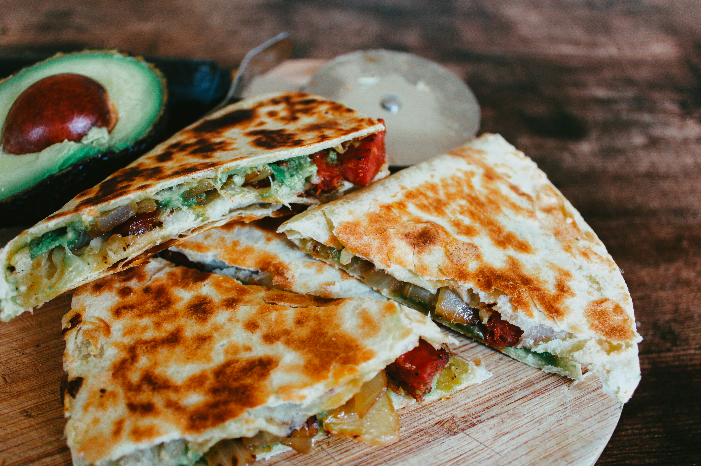

Chicken Quesadilla Recipe

Description
A quick and easy recipe for an at home chicken quesadilla utilizing that leftover chicken in the fridge. This recipe is easy and delicious for everyone,
even the kids will love it! It will take you less than 20 minutes and will satisfy your tastebuds, guaranteed!
Ingredients
- 6 oz of cooked chicken breast
- Two flour tortillas
- 8 oz of mixed cheese
- One avocado
- A small knob of butter
Steps
- Using a medium to large sized pan, set your stove to medium heat.
- Once heated, place half the butter onto the pan and let melt.
- Once your butter is melted, place your tortilla down in the pan and evenly spread your cheese. Place the chicken on top of the cheese, and place your second tortilla on top.
- While your cheese is melting, remove the pit from your avocado and slice it evenly or as desired. Make sure to keep an eye on your tortilla and flip every couple minutes.
- Let your tortilla toast to your desired crispiness, be sure not to burn it!
- Once your tortilla is fully crispy and your cheese is melted, remove the quesadilla and slice into six even pieces.
- Now plate your sliced quesadilla with your avocado, and enjoy your quick and easy meal!
Home